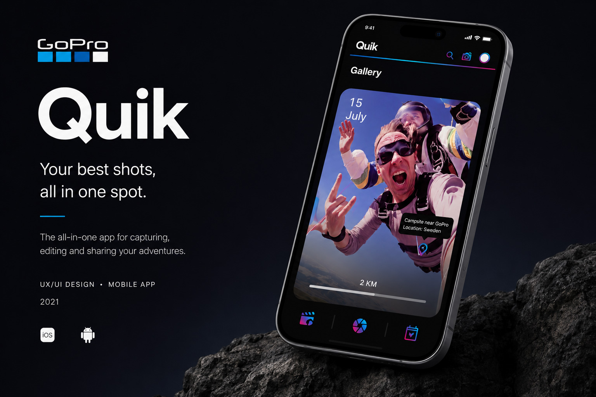
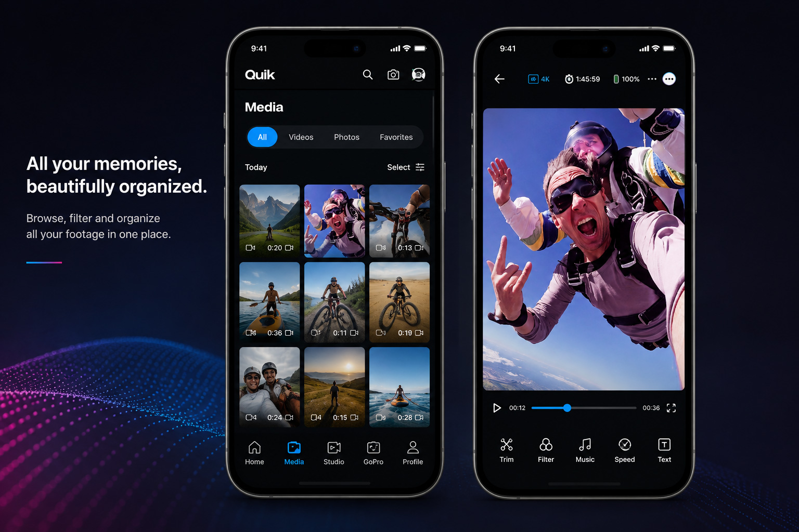
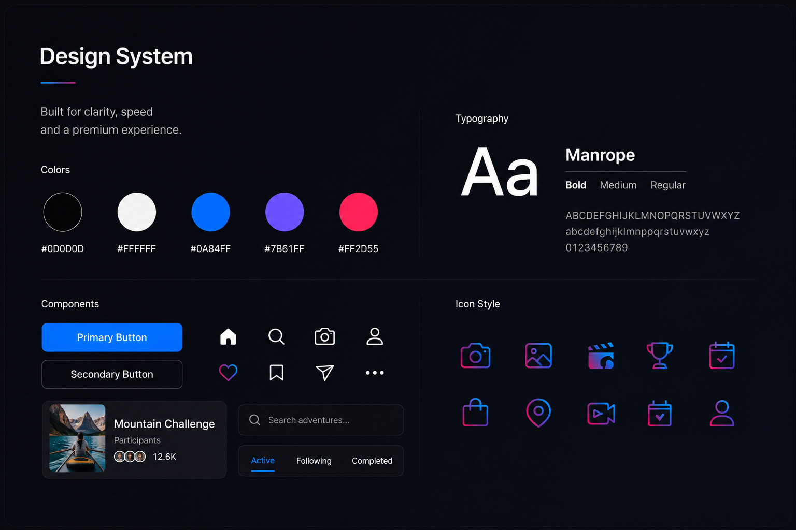
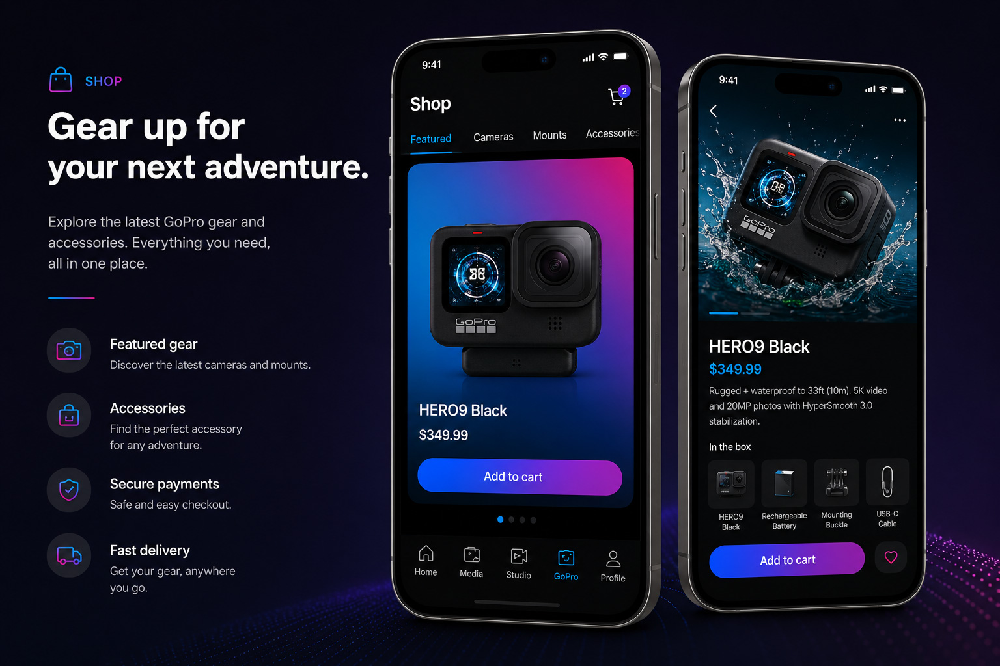

Mobile app concept · 2021
GoPro Challenge
A mobile experience for capturing, organizing, editing, and sharing adventures in one connected ecosystem.
UX/UI Designer
Mobile app
Interaction · Visual design
Figma · Photoshop

One place for every adventure.
GoPro Quik was reimagined as a mobile experience focused on making capture, editing, media organization, and discovery feel effortless.
Media and editing
All your memories, beautifully organized.
Browse, filter, and organize footage in one place, then move directly into focused editing tools for trim, filters, music, speed, and text.

Design language
Bold, clear, and built for motion.
A dark interface keeps visual content in focus, while bright blue, purple, and pink accents reinforce energy, speed, and the GoPro brand character.

GoPro ecosystem
Gear up without leaving the app.

Complex features, one clear journey.
This concept strengthened my ability to organize multiple product areas into a coherent mobile experience while maintaining a strong visual identity.
A next step would be usability testing with active GoPro users to validate navigation, media management, and the transition from capture to editing.